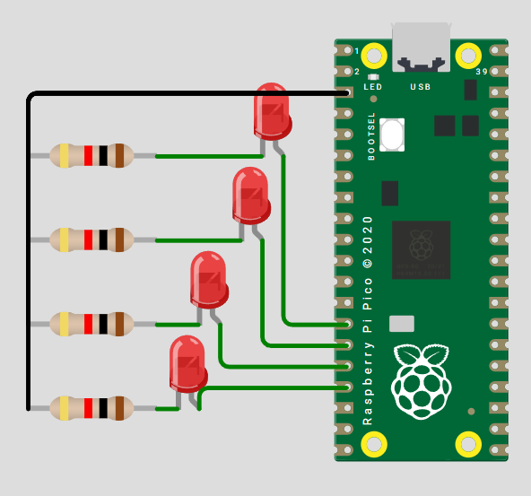

Practica 1: Outputs Basicos
1) Resumen
Nombre del proyecto: Prácticas de LEDs con Raspberry Pi Pico 2
Equipo / Autor(es): Rodrigo Zarate Fernandez
Curso / Asignatura: Sistemas Embebidos / Microcontroladores
Fecha: 27/08/2025
Descripción breve: Conjunto de programas que utilizan la Raspberry Pi Pico 2 para controlar LEDs mediante lógica binaria y máscaras:
Contador binario de 4 bits.
Barrido de LEDs.
Secuencia en código Gray.
2) Objetivos
General:
Aprender el manejo de GPIOs en Raspberry Pi Pico 2 y aplicar operaciones de máscaras lógicas para controlar múltiples LEDs.
Específicos:
Implementar un contador binario en LEDs.
Realizar un barrido de un LED encendido en secuencia.
Programar la secuencia de código Gray en 4 bits.
3) Alcance y Exclusiones
Incluye:
* Código en MicroPython para los tres ejercicios.
* Esquemático básico de conexiones.
* Documentación en Markdown para integrar en página o repositorio.
No incluye:
* Variantes en otros lenguajes (C, C++).
* Diseño de PCB.
* Ejecución en simuladores (solo hardware real).
4) Requisitos
Software:
* Thonny IDE o uPyCraft.
* Firmware MicroPython en Raspberry Pi Pico 2.
Hardware
Componente | Cant. | Nota Raspberry Pi Pico 2 | 1 |MCU principal LED rojo | 5 |Para los ejercicios Resistencias 1 kΩ| 5| Limitadoras de corriente Protoboard |1| Conexión rápida Cables Dupont |Varios |Macho–macho
Conocimientos previos
Operaciones bit a bit (&, |, <<, >>).
Uso de máscaras binarias.
Programación básica en MicroPython.
5) Desarrollo
5.1 Contador binario de 4 bits
Esquematico

#include <stdio.h>
#include "pico/stdlib.h"
#define A 12
#define B 13
#define C 14
#define D 15
const uint32_t LED_MASK = (1u << A) | (1u << B) | (1u << C) | (1u << D) ;
int main() {
stdio_init_all();
gpio_init_mask(LED_MASK);
gpio_set_dir_out_masked(LED_MASK);
gpio_put_masked(LED_MASK, 0);
while (true) {
for (uint32_t n = 0; n < 16; n++) {
gpio_put_masked(LED_MASK, n<<12);
sleep_ms(1000);
}
/* gpio_put_masked(LED_MASK, LED_MASK);*/
}
return 0;
}
Video
Video Contador 4 bits
5.2 Barrido leds
Esquematico
#include <stdio.h>
#include <stdint.h>
#include "pico/stdlib.h"
#define LED0 0
#define LED1 1
#define LED2 2
#define LED3 3
#define LED4 4
#define LED_MASK ((1u << LED0) | (1u << LED1) | (1u << LED2) | (1u << LED3) | (1u << LED4))
int main() {
stdio_init_all();
gpio_init_mask(LED_MASK);
gpio_set_dir_out_masked(LED_MASK);
int pos = 0;
int dir = 1; // 1 = derecha, -1 = izquierda
while (true) {
uint32_t value = (1u << pos);
gpio_put_masked(LED_MASK, value);
sleep_ms(200);
pos += dir;
if (pos == 4) dir = -1; // extremo derecho
if (pos == 0) dir = 1; // extremo izquierdo
}
return 0;
}
Video
Video Barrido Leds
5.3 Secuencia en codigo Gray
Esquematico
#include <stdio.h>
#include "pico/stdlib.h"
// Pines de los LEDs
#define LED0 2
#define LED1 3
#define LED2 4
#define LED3 5
// Arreglo con los LEDs
int leds[] = {LED0, LED1, LED2, LED3};
// Función para convertir binario a Gray
int bin_to_gray(int num) {
return num ^ (num >> 1);
}
int main() {
stdio_init_all();
// Inicializar pines como salida
for (int i = 0; i < 4; i++) {
gpio_init(leds[i]);
gpio_set_dir(leds[i], true);
}
while (1) {
// Recorrer los 16 estados (4 bits)
for (int i = 0; i < 16; i++) {
int gray = bin_to_gray(i);
// Escribir cada bit en los LEDs
for (int b = 0; b < 4; b++) {
int bit = (gray >> b) & 1;
gpio_put(leds[b], bit);
}
sleep_ms(500); // Pausa entre estados
}
}
}